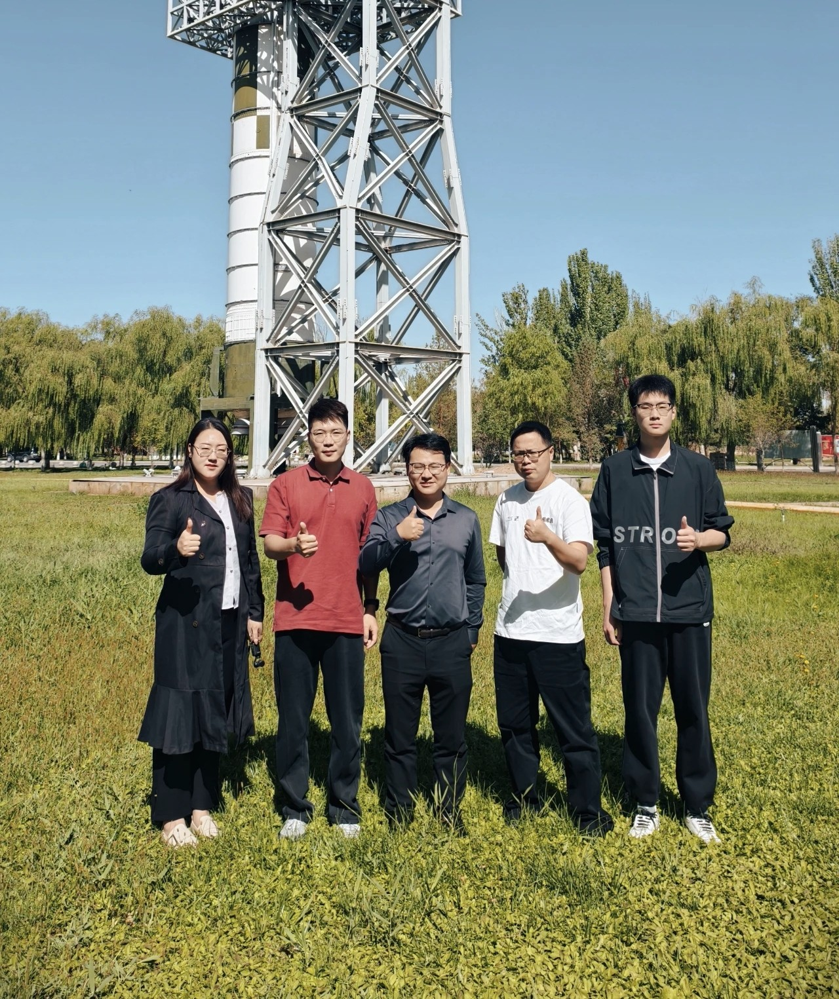

Spacecraft Flexible Sensing System Achieves First On-Orbit Validation
Northwestern Polytechnical University reported that the flexible sensing system developed with participation from the research team completed its first on-orbit validation. The mission demonstrated real-time state monitoring for key spacecraft components and showed how flexible sensing can move from laboratory prototypes to practical aerospace deployment. The report also highlights the significance of translating flexible electronics research into dependable hardware for complex space environments, where durability, precision, and long-term stability are all essential.
Source: Northwestern Polytechnical University Official WeChat